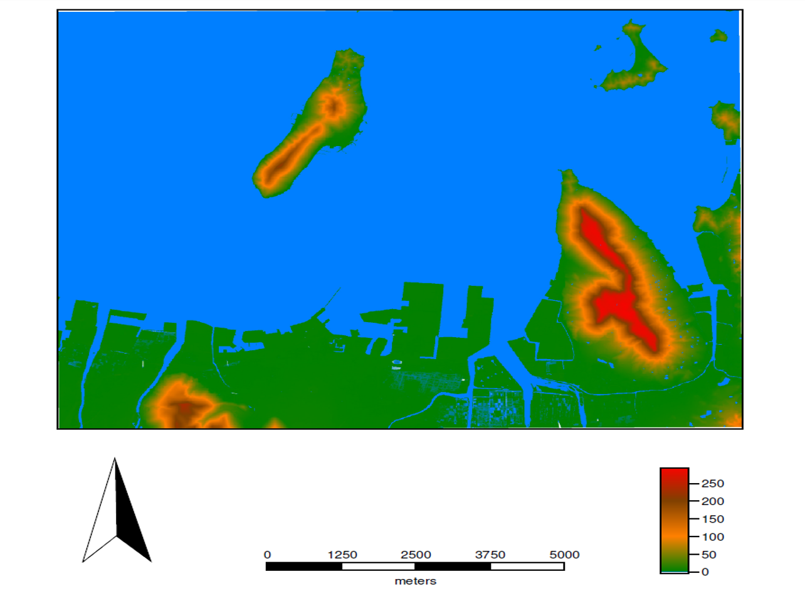

課題：GIS入門
GISでは、地理空間情報の可視化、編集、分析などができます。この実習はGIS入門として、QGISとGRASS GISを用いて地図の作成を行うものです。この教材は、GIS初学者やQGISおよびGRASS GISの初心者向けです。各課題の手順とGISオープン教材のQGISビギナーズマニュアルとGRASSビギナーズマニュアルを参考に、完成例のような地図が作成できれば、完了となります。GIS初学者は、本教材を進める前にGISの基本概念教材を確認しておいてください。
Menu
使用データ
fkuchiyama_sample.zip (福知山豪雨災害防災マップ © 福知山豪雨災害防災マップ を加工し作成）
国土地理院「 基盤地図情報 数値標高モデル 5ｍメッシュ 高松周辺（513440）」
QGIS入門
この実習は、QGISとサンプルデータを用いたデータの可視化や地図のレイアウトに関するものです。QGISは、無償で利用できるオープンソースのGISです。QGISビギナーズマニュアルを参考にインストールした後、実習を進めてください。本課題と対応する教材は、QGISビギナーズマニュアルです。
課題
平成26年8月豪雨後に実施した京都府福知山市でのフィールド調査（インタビュー）データを用いて、完成例のような地図を作成してください。また、作成する地図は、調査地点、凡例、方位、縮尺バー、タイトル等をレイアウトしたものとします。地図を作成後に、各地点の被災状況に差がある理由とその理由を証明するために必要なレイヤについて考え、300文字程度でまとめてください。
完成例

手順
属性情報の確認をする ※選択ツールなどを用いて各地点ごとの水害の被害状況を確認する。
※地図にタイトルを記載する方法：プリントコンポーザーから、新規ラベルの追加 > アイテムプロパティ > メインプロパティ（タイトル等の入力） > 外観,フォント（文字のサイズ調整)
GRASS入門
この実習は、GRASS GISと基盤地図情報の5mDEMを用いて、標高区分をした地図を作成します。GRASS GISは、無償で利用できるオープンソースのGISです。GRASSビギナーズマニュアルを参考にインストールした後、実習を進めてください。QGISのインストールも必要です。
課題
QGISとGRASS GISを用いて、高松市の地形(標高)の概観図を作成してください。
完成例

手順
完成例で使用したデータ
本ページで使用しているデータの出典については、該当する教材よりご確認ください。